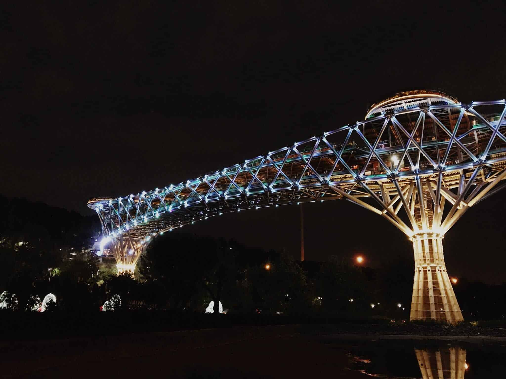
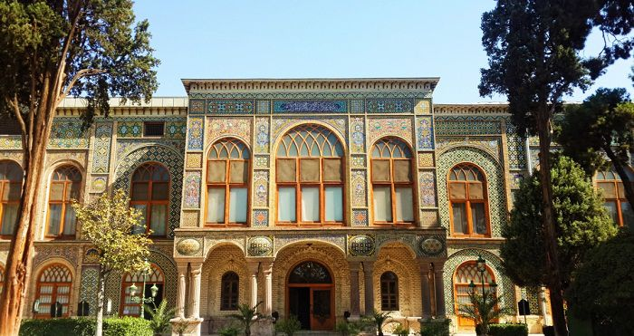
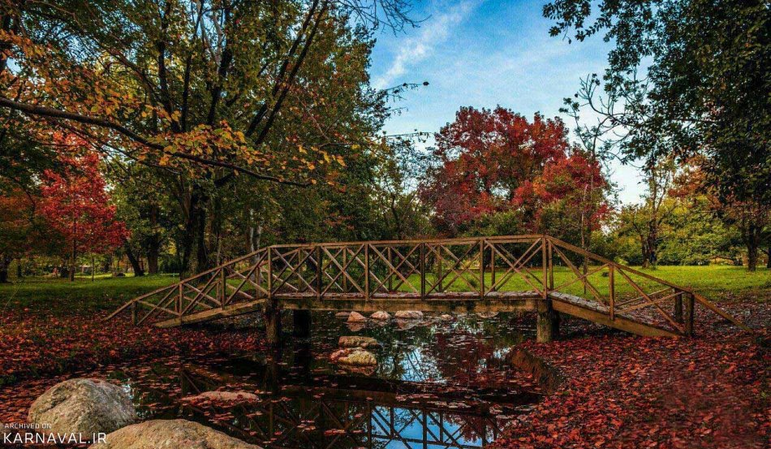

آشنایی با تهران
شهر تهران پایتخت و پرجمعیت ترین شهر ایران در شمال کشور و در دامنه رشته کوه البرز قرار دارد که با مساحت 730 کیلومتر مربع عنوان بیست و هفتمین شهر بزرگ جهان را به خود اختصاص داده است. این شهر با جمعیتی بالغ بر 13 میلیون نفر پرجمعیت ترین شهر ایران است که 17/5 درصد جمعیت کل کشور را در خود جای دادهاست و رشد جمعیت شهر تهران 4/1 درصد است که در مقایسه با دهه قبل اندکی افزایش یافته است. استان تهران از شمال با استان مازندران، از غرب با استان البرز، از شرق با استان سمنان و از جنوب با قم همسایه است . ناهمواریهای تهران شامل : رشته کوههای البرز در شمال، بخشهای مرکزی و کوهپایههای جنوبی البرز و دشتهای آن است و اقلیمی نیمه خشک دارد. آب و هوای استان تهران تحت تاثیر رشته کوه البرز در شمال، دشت کویر در جنوب و بادهای باران زا غربی قرار دارد که باعث شده تا در مناطق مختلف تهران آب و هوای مختلفی شکل بگیرد. این استان دارای 16 شهرستان، 45 شهر و 78 دهستان است و به 22 منطقه و 122 ناحیهٔ شهری تقسیم شدهاست. تهران با اختصاص دادن نیمی از فعالیت های صنعتی به خود نقش مهمی در این بخش ایفا می کند و به عنوان کانون اقتصاد ایران شناخته می شود. همین موضوع باعث شده تا علاوه بر سفرهای تفریحی سهم زیادی از سفرهای این شهر را ماموریت های کاری شامل شوند
جاذبه های گردشگری تهران
پل طبیعت
یکی از بهترین مناطق تهران برای گردشگری و تفریح پل طبیعت می باشد که به پل آب و آتش نیز معروف می باشد این پل ساختار منحصر به فردی دارد و چشم اندازهای زیبایی که دارد زیبایی آن را دو چندان میکند که این مکان یکی از مکان های محبوب برای عکس سلفی گرفتن و عکاسی نیز مناسب می باشد.
کاخ گلستان
کاخ گلستان که در گذشته محل زندگی پادشاهان قاجار بوده است و معماری این کاخ زندگی تجملاتی آنها را نشان میدهد.کاخ گلستان که بیش از چهار هکتار وسعت دارد و بخش های زیادی مثل کاخ ها ، تالارها ، موزه و باغ را شامل میشود . قدمت این اثر حدود ۴۵۰ سال است و در سازمان جهانی یونسکو به ثبت رسیده است .این اثر گردشگران زیادی را از همه جای کشور و جهان به خود جذب می کند و به عنوان یک اثر تاریخی از آن یاد میشود.
باغ گیاه شناسی ملی ایران
کاخ گلستان که در گذشته محل زندگی پادشاهان قاجار بوده است و معماری این کاخ زندگی تجملاتی آنها را نشان میدهد.کاخ گلستان که بیش از چهار هکتار وسعت دارد و بخش های زیادی مثل کاخ ها ، تالارها ، موزه و باغ را شامل میشود . قدمت این اثر حدود ۴۵۰ سال است و در سازمان جهانی یونسکو به ثبت رسیده است .این اثر گردشگران زیادی را از همه جای کشور و جهان به خود جذب می کند و به عنوان یک اثر تاریخی از آن یاد میشود.
